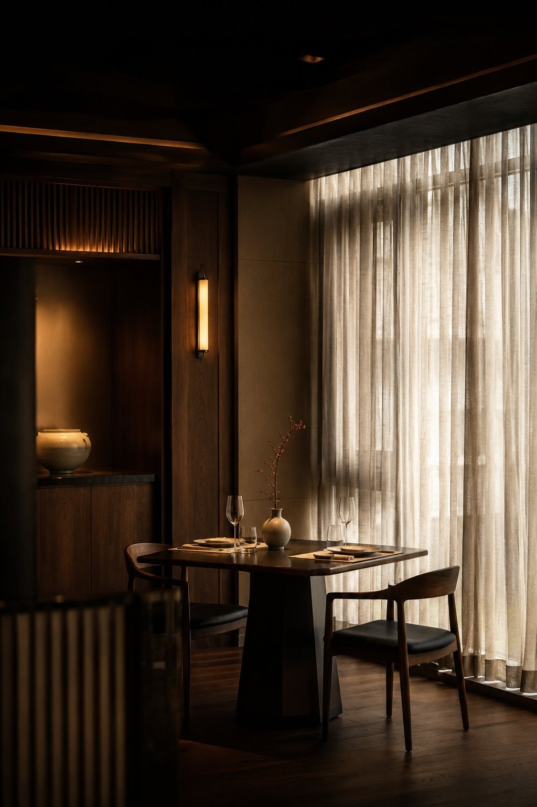
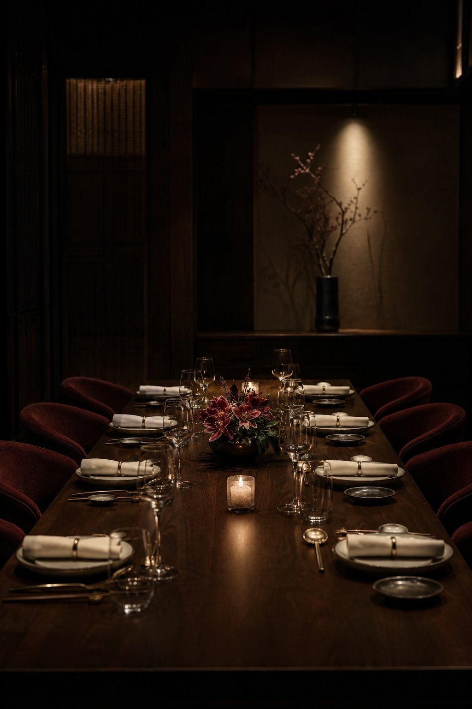
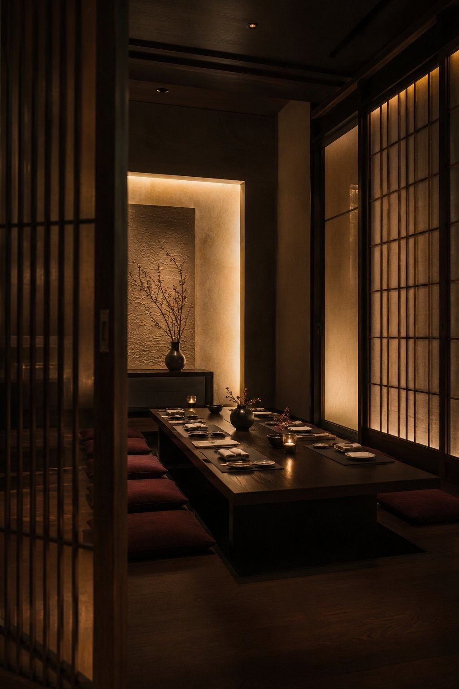
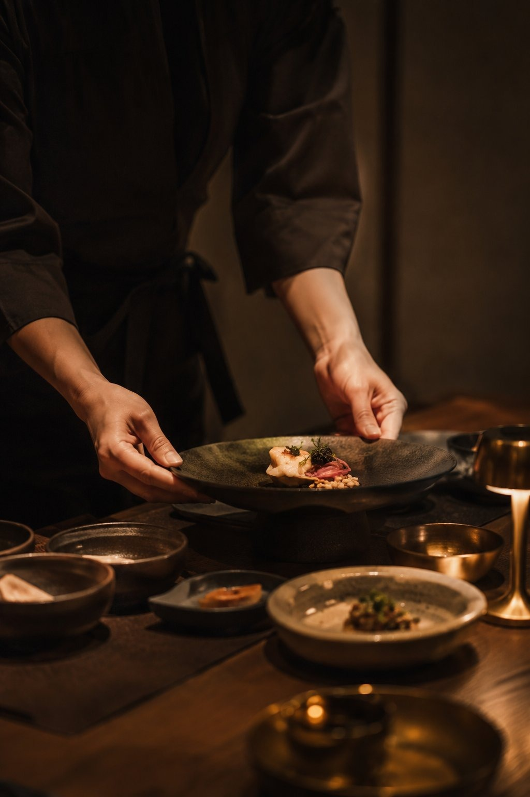
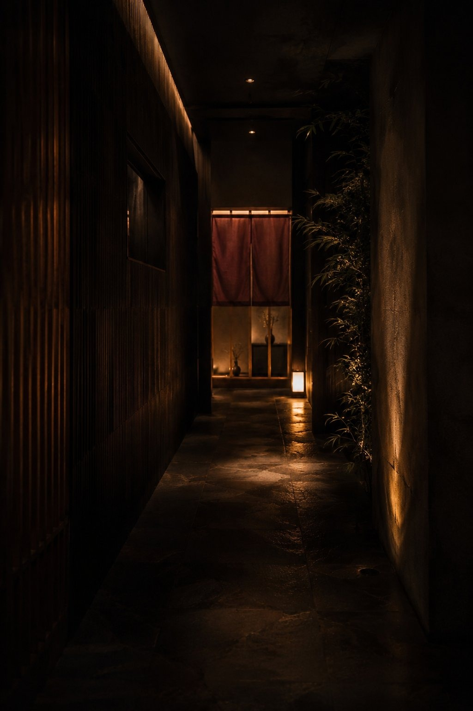
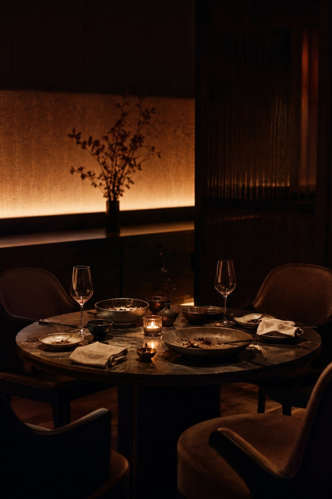

좋은 음식점은 이미 많습니다.
음식도, 공간도, 서비스도 이미 충분합니다.
다만 중요한 식사를 준비하는 고객은,
매장에 오기 전부터 이미 판단을 시작합니다.

상견례. 부모님 생신. 비즈니스 식사.
기념일. 외국인 손님 접대.
이런 날 고객은 맛있는 식당이 아니라,
실패하지 않을 자리를 찾습니다.
30–40대 고객은
부모님을 모실 때,
중요한 사람과 식사할 때
예약 전에 더 많이 확인합니다.
가격이 높을수록, 확인해야 할 근거도 많아집니다.

부모님이 좋아하실까?
상견례 자리로 어울릴까?
룸이 정말 조용할까?
서비스가 안정적일까?
주차는 편할까?
청첩장 모임에 적합할까??
사진과 실제 분위기가 다르진 않을까?
고객은 이 질문의 답을 온라인에서 먼저 찾습니다.
일반 음식점은 메뉴와 가격이
먼저 보이면 됩니다.
하지만,
고급 음식점은 함께 보여야 합니다.

필요한 건 예쁜 음식 사진만이 아닙니다.
예약을 결정하게 하는 사진입니다.

고객은 예약 버튼을 누르기 전
마지막으로 한 번 더 확인합니다.
이 자리가 우리 목적에 맞을까?
어른을 모셔도 괜찮을까?
거래처와 가도 어색하지 않을까?
필요한 정보가 한 화면에 있으면,
고객은 다시 검색으로 빠지지 않습니다.
발견은 네이버에서 시작될 수 있습니다.
다만 확신이 부족한 고객은 한 번 더 봅니다.
블로그, 지도, 인스타그램, 구글, AI 검색까지 —
어느 화면에서 보아도 같은 신뢰가 보여야 합니다.
같은 식당이라도, 고객의 목적에 따라
보여줘야 할 근거는 달라집니다.
처음부터 큰 광고를 늘릴 필요는 없습니다.
먼저,
고객이 예약 전 확인하는 화면부터
정리하면 됩니다.
이 작은 정리가, 고급 음식점의 첫인상을 바꿉니다.
음식점은 아니지만,
서울 강남권의 한 오프라인 예약형 매장에서
같은 방식을 먼저 정리해 봤습니다.
* 특정 노출을 보장하진 않습니다. 다만 홈페이지·지도·콘텐츠가 같은 방향으로 정리되면, 검색과 AI가 참고할 근거가 온라인에 남습니다.

고급 음식점은 맛으로만 선택되지 않습니다.
고객은 중요한 자리가 실패하지 않을지,
먼저 온라인에서 확인합니다.
이제 필요한 것은 더 많은 홍보가 아니라,
고객이 안심하고 예약할 수 있는 근거를 정리하는 일입니다.
상견례, 생신, 접대, 기념일 고객이
예약 전 어떤 화면을 보고 판단하는지
먼저 진단해드립니다.
매장명과 지역, 두 가지만 알려주시면 됩니다.
특정 노출이나 매출을 보장하지 않습니다 · 첫인상 진단부터 도와드립니다